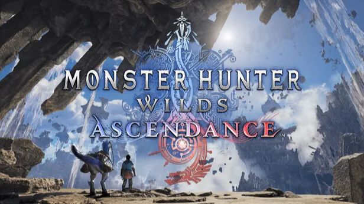

Luiso · 1 de septiembre de 2026
Capcom confirmó uno de los grandes atractivos de su presencia en Tokyo Game Show 2026: Monster Hunter Wilds: Ascendance tendrá allí su primera demo jugable a nivel mundial.
La expansión de Monster Hunter Wilds podrá probarse en el stand de Capcom durante la feria, que se celebrará del 17 al 21 de septiembre en Makuhari Messe, y la compañía ya adelantó qué tipo de contenido podrán experimentar los asistentes.
Habrá tres misiones diferentes, diseñadas tanto para jugadores veteranos como para quienes todavía no hayan jugado Monster Hunter Wilds.
La más llamativa será una misión contra un monstruo completamente nuevo, ambientada en un escenario que tampoco había sido mostrado hasta ahora: las Ruinas de Kumoi —"Kumoi no Iseki-gun" en japonés—, un nuevo campo de batalla formado por ruinas suspendidas en el cielo.
Los jugadores podrán recorrer esta nueva zona utilizando un Seikret antes de enfrentarse a una criatura voladora desconocida.
Esta misión estará disponible tanto para un jugador como para partidas multijugador.
La segunda misión estará centrada en uno de los elementos que más interés puede generar entre los seguidores de la saga: el regreso de un Dragón Anciano.
Capcom confirmó que Ascendance recuperará al menos uno de estos monstruos clásicos, aunque todavía no reveló cuál será. El nombre del monstruo se anunciará durante el próximo Capcom Spotlight: TGS 2026, que se emitirá el 16 de septiembre a las 23:00, hora de Japón, un día antes de la apertura de Tokyo Game Show.
Esta misión también podrá jugarse tanto en solitario como en cooperativo.
Por último, quienes se acerquen por primera vez a Monster Hunter Wilds tendrán una misión contra Chatacabra, diseñada como una introducción al sistema de combate y a las mecánicas básicas del juego.
Pero hay otro detalle particularmente importante: las tres misiones permitirán utilizar el nuevo sistema Boost Bracer, una de las principales novedades jugables de Ascendance.
La presencia de Ascendance también estará acompañada por otros títulos importantes de Capcom. Dragon's Dogma 2: Dark Arisen tendrá su primera demo jugable en Japón, mientras que Mega Man: Dual Override también podrá probarse por primera vez en territorio japonés. Onimusha: Way of the Sword también estará disponible para los asistentes.
Además, Capcom realizará un Spotlight de aproximadamente 40 minutos el 16 de septiembre, donde presentará novedades de Monster Hunter Wilds: Ascendance, Dragon's Dogma 2: Dark Arisen, Mega Man: Dual Override y Street Fighter 6.
La combinación entre el programa online y la demo de Ascendance hace que Tokyo Game Show pueda convertirse en el primer gran momento de información sobre la expansión Hasta ahora Capcom había mostrado Monster Hunter Wilds: Ascendance principalmente mediante material promocional, pero todavía no había permitido que el público experimentara directamente sus nuevas mecánicas.
Y hay un detalle que probablemente genere especial expectativa: todavía no sabemos qué Dragón Anciano regresará ni cuál es el nuevo monstruo que aparecerá en las Ruinas de Kumoi.
Ambos datos deberían convertirse en uno de los principales focos del Spotlight y de la cobertura de Tokyo Game Show.